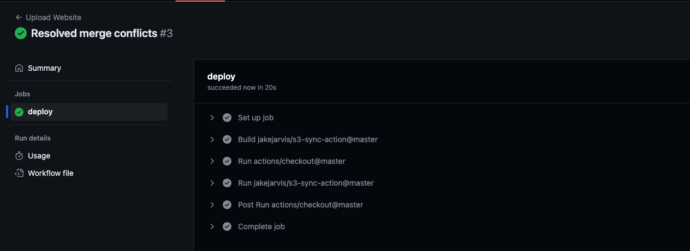
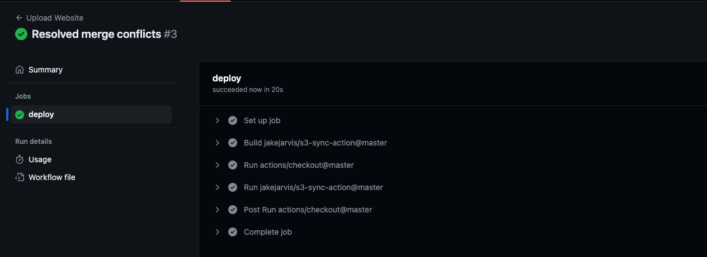

The Cloud Resume Challenge
I recently discovered "The Cloud Resume Challenge" and was instantly drawn to its exciting premise. I've eagerly accepted the challenge, which involves creating a cloud-based resume application using AWS Cloud. This challenge is an incredible opportunity to demonstrate my cloud computing skills and build a unique portfolio piece. I'm excited to learn new technologies, tackle real-world cloud infrastructure tasks, and showcase my dedication to growth in this field. Follow my journey as I document my progress and celebrate achievements along the way. This challenge represents a significant step in my career, and I'm thrilled to see where it leads.


 
